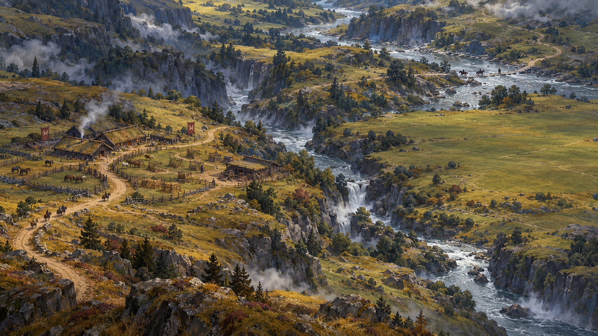
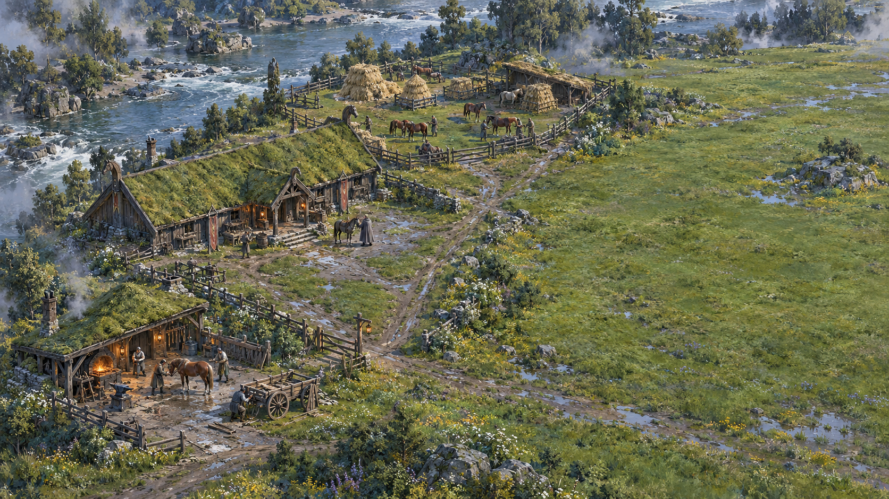
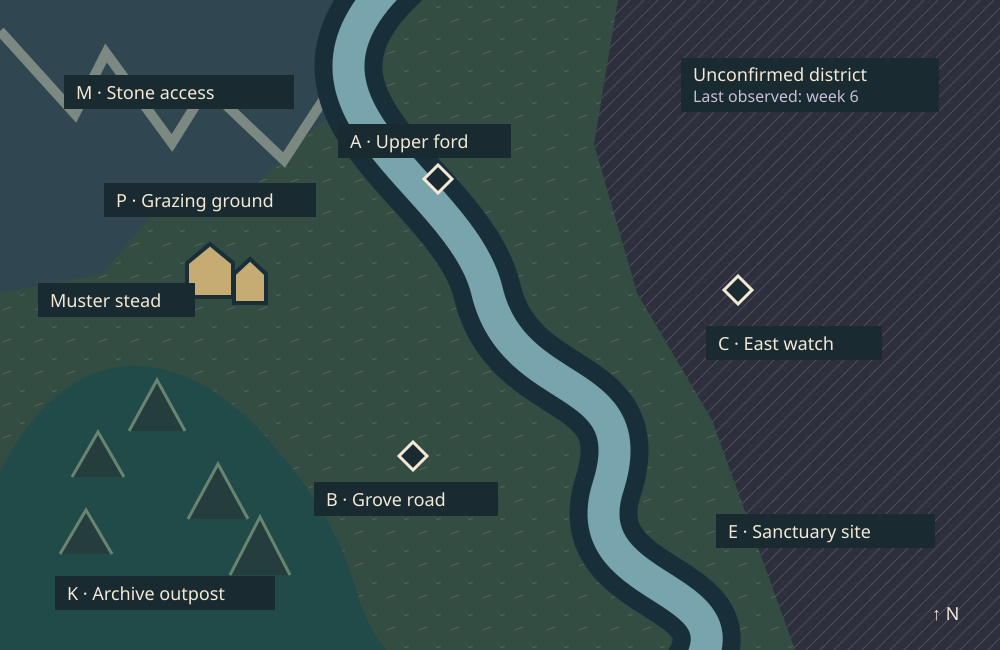

Rohan / mortal work
Rider Marshal
Straw, worn flax and oiled timber. Pasture and fodder shape the settlement; a clasp carries memory.
14px figure · 44px selection target
Silmarillion / art and experience studies
Original invented grassland basin · conceptual strategic view · illustrative week 8

Read the land first. The person stays small; selection uses a large target and an opaque label. Public objectives and the two action budgets remain available to every faction.
Production and hero recreation · proposed local screen · example snapshot

Loss has a cost, not an empty interface. Show the component and hero recipe separately, including their full chain. Captivity would keep this same slot occupied.
Original manifestation and costume proposals · the portrait holds detail; the map holds distance
Straw, worn flax and oiled timber. Pasture and fodder shape the settlement; a clasp carries memory.
Mineral blue, iron and local heat. Exceptional workmanship inside a small sanctuary, never an unlimited city.
Coal violet, stressed iron and copper. Industry spreads through vulnerable sites; doctrine persists after death.
A shared paint language is not interchangeable culture. These three examples are proposals; all 55 profiles have traceable treatments. The generated sheet's full-body studies are enlarged studies, not calibrated sprites.
Original top-down schematic · invented cross-era basin · functional overlays are separate from paint

No false certainty. Resource access is not a fifth stock. Overlay patterns remain meaningful without hue; reading labels stay on opaque surfaces. This study makes no claim about canonical geography.
Original object history and dialogue · narrative proposal · no hidden payment or added inner-voice mechanic
Observed: worn iron, later copper binding.
Attribution: maker unknown.
Original object proposal, not a named canonical relic.
Intimacy without a giant map hero. The portrait, object and narrow reading column carry attention. Quiet alternatives can remember a choice; they must never conceal strategic costs.